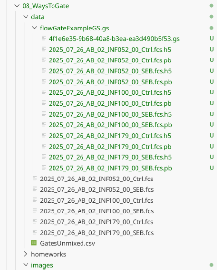

[1] '4.0.2'[1] '1.39.3'[1] '2.22.0'[1] '0.99.2'2026-04-07


.
Welcome to Week 08 in the Cytometry in R course. The day that many of you have been patiently waiting for has arrived, today is the day we learn how to create gates in R!!! We will showcase two approaches, one a manual gating style, which is mediated through the flowGate R package, which launches an interactive R Shiny App as an interface by which you can draw the desired Gates.
.
Separately, we will learn how to use the openCyto R package to automated gate setup via a .csv template. We will also look at how to apply gate constraints, how to visualize our gates to ensure they were placed correctly, so that we can be confident with using either approach for our own projects.
Housekeeping
As we do every week, on GitHub, sync your forked version of the CytometryInR course to bring in the most recent updates. Then within Positron, pull in those changes to your local computer.
For YouTube walkthrough of this process, click here
After setting up a “Week08” project folder, copy over the contents of “course/00_WaysToGate/data” to that folder. This will hopefully prevent merge issues next week when attempting to pull in new course material. Once you have your new project folder organized, remember to commit and push your changes to GitHub to maintain remote version control.
If you encounter issues syncing due to the Take-Home Problem merge conflict, see this walkthrough. The updated homework submission protocol can be found here
.
Lets first make sure whether we have the packages installed (as well as the correct versions). We can do this using the packageVersion() function, for the R packages that we are interested in.
.
.
At the time of this class in April 2026, I have not heard back on my bug report. Functionally, this means if we try to use the package version installed via Bioconductor, it will install, but when we try to launch the Shiny app it will crash.
.
Fortunately, since the software is open-source, we were able to look at the source code, find a solution to the bug, and implement the changes to our own forked version of the R package. So for this class, while we wait for the flowGate maintainers to upstream the bug-fixes.
.
If you already have installed flowGate, you will need to use the remove.packages() function to uninstall it. Once this is done, close and reopen Positron.
.
As our forked version of flowGate is on GitHub, we will need to use the remotes package to install it using the install_github() command. Alternatively, if you completed the Week 01 take-home problems and have the pak R package installed, you could alternatively use the pkg_install function.
.
Once this forked version from GitHub is installed, you should see the following for the version number
.
Now that we have the working R package versions installed, let’s go ahead and attach them to our local environments, since we will be using them extensively throughout today
.
Next up, lets identify the SFC .fcs files that are present within the data folder. For the course, we are reusing the dataset from Week 05
# StorageLocation <- file.path("course", "08_WaysToGate", "data") # When working interactively
StorageLocation <- file.path("data") # Quarto Render
fcs_files <- list.files(StorageLocation, pattern=".fcs", full.names=TRUE)
fcs_files[1] "data/2025_07_26_AB_02_INF052_00_Ctrl.fcs"
[2] "data/2025_07_26_AB_02_INF052_00_SEB.fcs"
[3] "data/2025_07_26_AB_02_INF100_00_Ctrl.fcs"
[4] "data/2025_07_26_AB_02_INF100_00_SEB.fcs"
[5] "data/2025_07_26_AB_02_INF179_00_Ctrl.fcs"
[6] "data/2025_07_26_AB_02_INF179_00_SEB.fcs" .
Having identified our .fcs files, lets proceed and load them into a GatingSet
.
And as we saw last time, let’s go ahead and apply the transformation (and particular argument values), that we optimized during Week 07.
SFC_Parameters <- colnames(SFC_GatingSet)
FluorophoresOnly <- SFC_Parameters[!stringr::str_detect(SFC_Parameters, "FSC|SSC|Time")]
Biexponential <- flowjo_biexp_trans(channelRange=4096, maxValue=262144,
pos=4.5, neg=2, widthBasis=-500)
MyBiexTransform <- transformerList(FluorophoresOnly, Biexponential)
transform(SFC_GatingSet, MyBiexTransform)A GatingSet with 6 samples.
Based on the plotting output, if you are content with the applied transformation, you are now ready to proceed to gating. If not, recreate the GatingSet, modify the transformation arguments, and plot again until you are.
.
flowGate is a Bioconductor R package that launches an interactive R Shiny app. This allows us to draw and apply various manual gates, which get added to our existing GatingSet object. It is one of the newer Bioconductor packages, adresses a major need for the R cytometry workflows, which makes it especially unfortunate that it got caught up in the ggplot2 version 4 buggyness. While we wait for the maintainers to upstream the bug-fixes, we will use the forked version.
.
Let’s start by replicating from scratch what would be my usual gating scheme, working our way down to various T cell populations. I typically start with singlets. The function we will be using first is the gs_gate_interactive() function.
.
The main arguments we need to specify values for are: the name of our GatingSet (gs); provide a name for our new gate (filterId); designate which sample in the Gating Set to use for plotting (sample=1); provide the X and Y fluorophore within a list style argument (dims=list(“FSC-A”, “FSC-H”)); and finally the subset to be used as the parent gate. Given we haven’t drawn any gates at this point, we will specify the “root” gate.
.
With the arguments briefly explained, let’s run the line of code, and wait for the RShiny App to launch!
.
When a Shiny R app launches, you will see the following appear in your console window

.
When running a Shiny App, R stops taking inputs from the console, and focuses on listening for code commands coming through the App. As a result, the console will not accept typed commands until either the Shiny app is closed, or the red stop button is selected.
.
The Shiny app will generally initially launch in the Viewer portion of the secondary right side-bar, although you can modify Positron settings to have it open directly to your web browser. I recommend expanding the area by dragging the grey border until you can see everything without needing to use the scrollbars.

.
To draw a singlet gate, first click on the Polygon option under Gate Type.

.
Next click on the plot, to start drawing a gate. You won’t see a line visualized until you have clicked a second location.

.
Continue adding points until you have finished gating around your singlets.

.
And finally, select the Done button to finish the gate creation (which will add a line from your final point to the starting point)

.
At this point, the Shiny app will stop being active (notice the dissapearance of the red stop sign), and we should get the following output returned to the console corresponding to the gating information

.
Now, if we were to check our gates within our GatingSet, we would see the following:

.
The gate has been created and applied to our GatingSet. A question that may arise, was this gate applied to just one specimen, or to all specimens in the GatingSet? Let’s go ahead and check!

.
The gate appears to have been applied across the board to all specimens, since we have counts for the respective gate for all the specimens.
.
Let’s continue, and add another gate, this time for viability dye Zombie NIR, to determine what cells are alive. We will need to modify the arguments we provide, since this will be a new gate, based on new parameters, and placed under the singlets gate.
.
As you might notice, the included .fcs files look to have already been pre-processed, as there are few dead cells. Glancing at the y-axis, based on what we saw during Week 06 we can also deduce that behind-the-scenes the ggcyto/ggplot2 plot is not using coords_cartesian(), as it has zoomed in to the full extent of the data that is present.
.
To showcase the other gate shape options, lets go ahead and select the option to draw a rectangle.

.
In this case, click and drag to highlight the desired area. Once the rectangle is drawn, and we are happy with it, we can select done to close the Shiny session and send the gate coordinates to the gating set.

.
Similar to what we saw when we drew a polygon, a coordinate readout gets printed to our console window.

.
We can then circle back and check to make sure the gates were added within our GatingSet

.
And validate by checking to see if the statistics output has changed

.
Next up, let’s see how to use a span type gate. In this case, the .fcs files in question were pre-gated for live T cells (to keep the file size small for this course example), so lets test out the span gating option when gating T cells. Lets start the new gate creation by modifying the gating arguments accordingly
.
We can then select the Span Gate Type option, and draw a rectangle spanning the direction we want out span gate created.

.
We can then finish the gate by clicking done, and check the console readout as a sanity check that it didn’t accidentally gate a Y-axis span on us.

.
And similar process as we saw above to validate the gate was created and applied to our specimens.


.
Having gated down to T cells, lets go ahead and add a few gates for the individual T cell populations. Let’s start by drawing a polygon gate around CD4+ T cells.
.
Also, in case anyone was curious, flowGate retains ggcyto arguments, so if we wanted to, instead of fluorophore names, we could use alternatively use the marker names when specifying the axis for the flow cytometry plots.
.
We can also modify the setting to overlay already existing gates when we are drawing new gates for the other two T cell subsets. This is done by providing the gate name to the overlayGates argument.
.
And we can repeat this for CD4-CD8- (Double Negative (DN)) T cells.
.
And a final-check to make sure the gates for the T cell subsets were added
.
And a quick check for the statistics
.
The last type of manual gate that we can implement with flowGate is a quadrant gate, in this case, let’s use it to create a quadrant for our two cytokines (TNFa and IFNg). We should ideally use one of the SEB-stimulated specimens for this if we want to visualize the cytokine-expressing cells, so I have switched over to the 6th sample in the GatingSet.

.
But what happens if we misdraw a gate and need to correct it? If you are in the process of actively drawing, you can hit the reset button and try again

.
But what if you had already created the gate?
.
To completely redraw an existing gate, you would need to add the “regate” argument and set it to TRUE. This will delete the existing gate, and allow you to draw a new one in its place.
.
Alright, so we have put effort and drawn all our gates. But what happens if we close Positron? Well, we loose all our effort and have to redraw them again. Which doesn’t sound like a particularly good use of our time.
.
Fortunately, there is a way to save our existing GatingSet objet using flowWorkspace save_gs() function, allowing us to load back in the GatingSet object later on.
.
Our GatingSet ends up being stored as its own folder with various h5 and pb objects inside. Please note, re-loading them in successfully can be file.path sensitive, so avoid messing with the folder as much as possible.

.
To reload back into R, we would use the load_gs() function.
name Population
<char> <char>
1: 2025_07_26_AB_02_INF052_00_Ctrl.fcs /singlets/live/Tcells/DN
2: 2025_07_26_AB_02_INF052_00_SEB.fcs /singlets/live/Tcells/DN
3: 2025_07_26_AB_02_INF100_00_Ctrl.fcs /singlets/live/Tcells/DN
4: 2025_07_26_AB_02_INF100_00_SEB.fcs /singlets/live/Tcells/DN
5: 2025_07_26_AB_02_INF179_00_Ctrl.fcs /singlets/live/Tcells/DN
6: 2025_07_26_AB_02_INF179_00_SEB.fcs /singlets/live/Tcells/DN
Parent Count ParentCount
<char> <int> <int>
1: /singlets/live/Tcells 509 8850
2: /singlets/live/Tcells 519 7176
3: /singlets/live/Tcells 191 8546
4: /singlets/live/Tcells 192 6721
5: /singlets/live/Tcells 158 8769
6: /singlets/live/Tcells 147 6438.
In the examples above, we created separate gates by running individual chunks of code. There is an alternative method in flowGate to allow you to draw all your gates immediately after each other.
GatingTable <- tibble::tribble(
~filterId, ~dims, ~subset,
"singlets", list("FSC-A", "FSC-H"), "root",
"live", list("FSC-A", "Zombie NIR-A"), "singlets",
"Tcells", list("CD3", "CD45"), "live",
"CD4+", list("CD8", "CD4"), "Tcells",
"CD8+", list("CD8", "CD4"), "Tcells",
"DN", list("CD8", "CD4"), "Tcells",
).
Lets recreate our GatingSet object:
SFC_cytoset <- load_cytoset_from_fcs(fcs_files,
truncate_max_range = FALSE, transformation = FALSE)
SFC_GatingSet <- GatingSet(SFC_cytoset)
SFC_Parameters <- colnames(SFC_GatingSet)
FluorophoresOnly <- SFC_Parameters[!stringr::str_detect(SFC_Parameters, "FSC|SSC|Time")]
Biexponential <- flowjo_biexp_trans(channelRange=4096, maxValue=262144,
pos=4.5, neg=2, widthBasis=-500)
MyBiexTransform <- transformerList(FluorophoresOnly, Biexponential)
transform(SFC_GatingSet, MyBiexTransform)A GatingSet with 6 samples.
And now, let’s apply the GatingTable scheme. As we create and click done, the next gate will automatically pop up in the Shiny App.

.
As you may have noticed, using flowGate, the gates are applied generally to all specimens, and we are limited in our ability to customize to individual specimens. Consequently, being able to visualize each specimen, and regate as necessary is important if we want to have confidence in our data.
.
For now, the simplest way to do so is using the autoplot() function from the ggcyto() package, repeating it for every specimen in the GatingSet. As we go further into the course, we will learn how to iterate through the specimens, and send the plot outputs to pdf files, reducing the need to write out individual lines of code for every specimen. We will also look at how to use other visualization tools to compare individual gates across multiple specimens.
ggcyto::autoplot(SFC_GatingSet[[1]]) + theme_bw()
ggcyto::autoplot(SFC_GatingSet[[2]]) + theme_bw()
ggcyto::autoplot(SFC_GatingSet[[3]]) + theme_bw()
# ggcyto::autoplot(SFC_GatingSet[[4]]) + theme_bw()
# ggcyto::autoplot(SFC_GatingSet[[5]]) + theme_bw()
# ggcyto::autoplot(SFC_GatingSet[[6]]) + theme_bw().
As we have surmized, flowGate can be used to facilitate drawing gates in a general manner for your main cell populations of interest, as we saw in this initial introduction.
.
A couple things to keep in mind, namely, these gates are applied generally to all specimens, and we are limited in our ability to customize to individual specimens. Consequently, being able to visualize each specimen, and regate as necessary is important if we want to have confidence in our data.
.
All in all, flowGate is a very nice R package for implementing supervised manual-style gates. While there are areas that can still be improved on, the beauty of the open-source nature is that if you have a good idea, and the know-how and/or time, these ideas can be implemented to extend the package to be able to do additional cool things.
.
The other gating approach that we will be learning today is implemented by the openCyto package from Bioconductor, which is a sister package to both flowWorkspace and CytoML. It works through the use of gating template .csv files, which can be customized with various algorithmic gating functions and arguments, allowing for substantial flexibility in creating and implementing automated gating schemes.
.
One of the advantages of this approach (in theory), is when properly constrained, it can “better” handle some of the inter-specimen variability differences that we may encounter due to batch effects, that might otherwise throw off a fixed-manual gate applied equally acrooss specimens.
.
However, remember, there is one main truth to computational cytometry:

.
So always always always check the outputs visually, because I hate writing letters to the editor.
.
Lets go ahead and locate an already assembled GatingTemplate for our particular dataset. This is also in the data folder, so we can separate it from our .fcs files by switching out the pattern argument
alias pop parent dims gating_method
1 singlets + root FSC-A,FSC-H singletGate
2 lymphocytes + singlets FSC-A, SSC-A flowClust
3 live - lymphocytes Zombie NIR-A gate_mindensity
4 Tcells + live Spark Blue 550-A gate_mindensity
5 CD4 + Tcells CD4 gate_mindensity
6 CD8 + Tcells CD8 gate_mindensity
gating_args collapseDataForGating groupBy preprocessing_method
1 FALSE NA NA
2 K=2, target=c(2e6, 5e5) FALSE NA NA
3 gate_range=c(1e4,2e4) FALSE NA NA
4 FALSE NA NA
5 FALSE NA NA
6 FALSE NA NA
preprocessing_args
1 NA
2 NA
3 NA
4 NA
5 NA
6 NA.
Each gate is represented by an individual row.
.
For the first example, we are gating for singlets. Later on after running the code, this will generate a gate that resembles the following:

.
Looking at the row in the gatingTemplate, we can see the gate name (alias), the parent gate (parent), and the x and y dimensions (dims). The gating_method defines what kind of gate is being created, in this context, a singlet gating polygon.
.
The other columns are not as easy to interpret at first glance. pop designates whether you want to keep the cells within the gate (+) or those outside the gate (-).
.
gating_args are specific to the gating_method, we will be using these later on when specifying gate constraints. The last four arguments are rather niche and won’t be the main focus of today, and I will refer you to the openCyto vignettes for how to use them for more specialized projects.
.
Looking at the entire gatingTemplate .csv, we can see we will be implementing automated gating for 6 gates (singlets, lymphocytes, live, Tcells, CD4 and CD8). Similar to what we saw with the singlets gate, each of these gates also has corresponding parent gate and (axis) dimension information provided.
alias pop parent dims gating_method
1 singlets + root FSC-A,FSC-H singletGate
2 lymphocytes + singlets FSC-A, SSC-A flowClust
3 live - lymphocytes Zombie NIR-A gate_mindensity
4 Tcells + live Spark Blue 550-A gate_mindensity
5 CD4 + Tcells CD4 gate_mindensity
6 CD8 + Tcells CD8 gate_mindensity.
One thing we can notice is the second gate (lymphocytes), uses the flowClust gating_method.
.
This row will later result in a gate that resembles the following

.
One thing that is different compared to the singlets gate, is that the gating_args column has values. Behind the scenes, gating_method “flowClust” is reaching out to an R package of the same name to identify populations based on density.
.
Especially when working with FSC-SSC (where multiple populations may be present, including lymphocytes, monocytes, granulocytes, debris, etc). having the ability to specify arguments to denote the region we are interested in can be important.
.
In this case, target specifies the x and y coordinate we expect our population center to be roughly at. Since we are gating for lymphocytes, x is around 2e6, while the y is between 5e5 and 1e6. If we wanted a different population (ex. monocytes), we would modify the values provided accordingly to match that population.
.
The last several gates are all gate_mindensity gates
alias pop parent dims gating_method
1 singlets + root FSC-A,FSC-H singletGate
2 lymphocytes + singlets FSC-A, SSC-A flowClust
3 live - lymphocytes Zombie NIR-A gate_mindensity
4 Tcells + live Spark Blue 550-A gate_mindensity
5 CD4 + Tcells CD4 gate_mindensity
6 CD8 + Tcells CD8 gate_mindensity
gating_args
1
2 K=2, target=c(2e6, 5e5)
3 gate_range=c(1e4,2e4)
4
5
6 .
A good example of these is our CD4 gate
.
Which will generate a gate that resembles the following.

.
In this case, since we are specifying pop = +, we will be keeping the positive cells (landing to the right of the gate line).
.
gate_mindensity is a fast calculation, finding the point with the fewest cells. It can however mistrigger, ending up with gates placed before any cell is present, or after every cell. When this occurs, we can constrain the search area by providing a gate_range to the gating_args, as we can see here for the viability gate
.
With this broad overview of the gatingtemplate, we can now proceed with loading it in. To do so, openCyto recommends reading in the .csv file using the data.table package’s fread function, to ensure the formatting is correctly retained
.
Once this is done, we can pass it to the gatingTemplate() function, which will wrap it with the required information layer needed for openCyto to add the gates to the GatingSet.
Formal class 'gatingTemplate' [package "openCyto"] with 7 slots
..@ name : chr "default"
..@ nodes : chr [1:7] "root" "/singlets" "/singlets/lymphocytes" "/singlets/lymphocytes/live" ...
..@ edgeL :List of 7
.. ..$ root :List of 1
.. .. ..$ edges: int 2
.. ..$ /singlets :List of 1
.. .. ..$ edges: num 3
.. ..$ /singlets/lymphocytes :List of 1
.. .. ..$ edges: num 4
.. ..$ /singlets/lymphocytes/live :List of 1
.. .. ..$ edges: num 5
.. ..$ /singlets/lymphocytes/live/Tcells :List of 1
.. .. ..$ edges: num [1:2] 6 7
.. ..$ /singlets/lymphocytes/live/Tcells/CD4:List of 1
.. .. ..$ edges: num(0)
.. ..$ /singlets/lymphocytes/live/Tcells/CD8:List of 1
.. .. ..$ edges: num(0)
..@ edgeData :Formal class 'attrData' [package "graph"] with 2 slots
.. .. ..@ data :List of 6
.. .. .. ..$ root|/singlets :List of 2
.. .. .. .. ..$ gtMethod :Formal class 'gtMethod' [package "openCyto"] with 5 slots
.. .. .. .. .. .. ..@ name : chr "singletGate"
.. .. .. .. .. .. ..@ dims : chr "FSC-A,FSC-H"
.. .. .. .. .. .. ..@ args : list()
.. .. .. .. .. .. ..@ groupBy : chr ""
.. .. .. .. .. .. ..@ collapse: logi FALSE
.. .. .. .. ..$ isReference: logi FALSE
.. .. .. ..$ /singlets|/singlets/lymphocytes :List of 2
.. .. .. .. ..$ gtMethod :Formal class 'gtMethod' [package "openCyto"] with 5 slots
.. .. .. .. .. .. ..@ name : chr "gate_flowclust_2d"
.. .. .. .. .. .. ..@ dims : chr "FSC-A, SSC-A"
.. .. .. .. .. .. ..@ args :List of 2
.. .. .. .. .. .. .. ..$ K : num 2
.. .. .. .. .. .. .. ..$ target: language c(2e+06, 5e+05)
.. .. .. .. .. .. ..@ groupBy : chr ""
.. .. .. .. .. .. ..@ collapse: logi FALSE
.. .. .. .. ..$ isReference: logi FALSE
.. .. .. ..$ /singlets/lymphocytes|/singlets/lymphocytes/live :List of 2
.. .. .. .. ..$ gtMethod :Formal class 'gtMethod' [package "openCyto"] with 5 slots
.. .. .. .. .. .. ..@ name : chr "gate_mindensity"
.. .. .. .. .. .. ..@ dims : chr "Zombie NIR-A"
.. .. .. .. .. .. ..@ args :List of 1
.. .. .. .. .. .. .. ..$ gate_range: language c(10000, 20000)
.. .. .. .. .. .. ..@ groupBy : chr ""
.. .. .. .. .. .. ..@ collapse: logi FALSE
.. .. .. .. ..$ isReference: logi FALSE
.. .. .. ..$ /singlets/lymphocytes/live|/singlets/lymphocytes/live/Tcells :List of 2
.. .. .. .. ..$ gtMethod :Formal class 'gtMethod' [package "openCyto"] with 5 slots
.. .. .. .. .. .. ..@ name : chr "gate_mindensity"
.. .. .. .. .. .. ..@ dims : chr "Spark Blue 550-A"
.. .. .. .. .. .. ..@ args : list()
.. .. .. .. .. .. ..@ groupBy : chr ""
.. .. .. .. .. .. ..@ collapse: logi FALSE
.. .. .. .. ..$ isReference: logi FALSE
.. .. .. ..$ /singlets/lymphocytes/live/Tcells|/singlets/lymphocytes/live/Tcells/CD4:List of 2
.. .. .. .. ..$ gtMethod :Formal class 'gtMethod' [package "openCyto"] with 5 slots
.. .. .. .. .. .. ..@ name : chr "gate_mindensity"
.. .. .. .. .. .. ..@ dims : chr "CD4"
.. .. .. .. .. .. ..@ args : list()
.. .. .. .. .. .. ..@ groupBy : chr ""
.. .. .. .. .. .. ..@ collapse: logi FALSE
.. .. .. .. ..$ isReference: logi FALSE
.. .. .. ..$ /singlets/lymphocytes/live/Tcells|/singlets/lymphocytes/live/Tcells/CD8:List of 2
.. .. .. .. ..$ gtMethod :Formal class 'gtMethod' [package "openCyto"] with 5 slots
.. .. .. .. .. .. ..@ name : chr "gate_mindensity"
.. .. .. .. .. .. ..@ dims : chr "CD8"
.. .. .. .. .. .. ..@ args : list()
.. .. .. .. .. .. ..@ groupBy : chr ""
.. .. .. .. .. .. ..@ collapse: logi FALSE
.. .. .. .. ..$ isReference: logi FALSE
.. .. ..@ defaults:List of 3
.. .. .. ..$ gtMethod : chr ""
.. .. .. ..$ ppMethod : chr ""
.. .. .. ..$ isReference: logi FALSE
..@ nodeData :Formal class 'attrData' [package "graph"] with 2 slots
.. .. ..@ data :List of 7
.. .. .. ..$ root :List of 1
.. .. .. .. ..$ pop:Formal class 'gtPopulation' [package "openCyto"] with 3 slots
.. .. .. .. .. .. ..@ id : chr "root"
.. .. .. .. .. .. ..@ name : chr "root"
.. .. .. .. .. .. ..@ alias: chr "root"
.. .. .. ..$ /singlets :List of 1
.. .. .. .. ..$ pop:Formal class 'gtPopulation' [package "openCyto"] with 3 slots
.. .. .. .. .. .. ..@ id : chr "/singlets"
.. .. .. .. .. .. ..@ name : chr "+"
.. .. .. .. .. .. ..@ alias: chr "singlets"
.. .. .. ..$ /singlets/lymphocytes :List of 1
.. .. .. .. ..$ pop:Formal class 'gtPopulation' [package "openCyto"] with 3 slots
.. .. .. .. .. .. ..@ id : chr "/singlets/lymphocytes"
.. .. .. .. .. .. ..@ name : chr "+"
.. .. .. .. .. .. ..@ alias: chr "lymphocytes"
.. .. .. ..$ /singlets/lymphocytes/live :List of 1
.. .. .. .. ..$ pop:Formal class 'gtPopulation' [package "openCyto"] with 3 slots
.. .. .. .. .. .. ..@ id : chr "/singlets/lymphocytes/live"
.. .. .. .. .. .. ..@ name : chr "-"
.. .. .. .. .. .. ..@ alias: chr "live"
.. .. .. ..$ /singlets/lymphocytes/live/Tcells :List of 1
.. .. .. .. ..$ pop:Formal class 'gtPopulation' [package "openCyto"] with 3 slots
.. .. .. .. .. .. ..@ id : chr "/singlets/lymphocytes/live/Tcells"
.. .. .. .. .. .. ..@ name : chr "+"
.. .. .. .. .. .. ..@ alias: chr "Tcells"
.. .. .. ..$ /singlets/lymphocytes/live/Tcells/CD4:List of 1
.. .. .. .. ..$ pop:Formal class 'gtPopulation' [package "openCyto"] with 3 slots
.. .. .. .. .. .. ..@ id : chr "/singlets/lymphocytes/live/Tcells/CD4"
.. .. .. .. .. .. ..@ name : chr "+"
.. .. .. .. .. .. ..@ alias: chr "CD4"
.. .. .. ..$ /singlets/lymphocytes/live/Tcells/CD8:List of 1
.. .. .. .. ..$ pop:Formal class 'gtPopulation' [package "openCyto"] with 3 slots
.. .. .. .. .. .. ..@ id : chr "/singlets/lymphocytes/live/Tcells/CD8"
.. .. .. .. .. .. ..@ name : chr "+"
.. .. .. .. .. .. ..@ alias: chr "CD8"
.. .. ..@ defaults:List of 1
.. .. .. ..$ pop: chr ""
..@ renderInfo:Formal class 'renderInfo' [package "graph"] with 4 slots
.. .. ..@ nodes: list()
.. .. ..@ edges: list()
.. .. ..@ graph: list()
.. .. ..@ pars : list()
..@ graphData :List of 1
.. ..$ edgemode: chr "directed".
With the gatingtemplate ready to go, we need to assemble our GatingSet object. We will repeat the code that we have already been working with today above.
SFC_cytoset <- load_cytoset_from_fcs(fcs_files,
truncate_max_range = FALSE, transformation = FALSE)
SFC_GatingSet <- GatingSet(SFC_cytoset)
SFC_Parameters <- colnames(SFC_GatingSet)
FluorophoresOnly <- SFC_Parameters[!stringr::str_detect(SFC_Parameters, "FSC|SSC|Time")]
Biexponential <- flowjo_biexp_trans(channelRange=4096, maxValue=262144,
pos=4.5, neg=2, widthBasis=-500)
MyBiexTransform <- transformerList(FluorophoresOnly, Biexponential)
transform(SFC_GatingSet, MyBiexTransform)A GatingSet with 6 samples.
The final step is applying the template to our GatingSet.
.
And finally, similar to the process we did for flowGate, let’s go ahead and use ggcyto autoplot() function to see how we did.
ggcyto::autoplot(SFC_GatingSet[[1]]) + theme_bw()
ggcyto::autoplot(SFC_GatingSet[[2]]) + theme_bw()
ggcyto::autoplot(SFC_GatingSet[[3]]) + theme_bw()
# ggcyto::autoplot(SFC_GatingSet[[4]]) + theme_bw()
# ggcyto::autoplot(SFC_GatingSet[[5]]) + theme_bw()
# ggcyto::autoplot(SFC_GatingSet[[6]]) + theme_bw().
We can still save our openCyto-gated GatingSet using save_gs() (using the same steps as detailed in the flowGate section). However, depending on the complexity of your gating scheme, once validated and properly constrained, it is also possibly to just reload everything from scratch with similar results, especially when using gate_mindensity (as flowClust is stochastic and may vary a bit).
.
During the course of this session, we explored how to add both manual and automated gates using two Bioconductor packages, flowGate and openCyto. While the examples were shown today were introductory and separate, since they both end up adding to our GatingSets, we can combine them to be able to set up rather complicated gating schemes, targeting our cell populations of interest for our respective datasets.
.
Separately, I would be remiss not to briefly mention a couple additional packages that while in development, are available via GitHub, and may be useful to know about in the long-run. These are the CytoExploreR and flowMagic R packages. We will cover these as one-off sessions later in the course, but depending what you are trying to do with your own datasets, might be worth checking out before then.
.
Next week, we will cover the last session of the “Intro to R” portion of the course (before proceeding into the intermediate Cytometry core portion) namely, how to create your own functions, i.e. the tools in our toolchest, that we have been using throughout the course. This was an area that when I first was starting out I didn’t realize quite how important a skillset it would proove to be in the long run, so to set you up for success on your own future adventures, will be introducing how to do this in context of derriving cell concentration from our acquired .fcs files.
.
flowGate: Introductory Vignetter The introductory flowGate vignette on Bioconductor, while we covered the main points, there are still a few useful aspects we didn’t have time to cover.
.
openCyto: An introduction to the openCyto Gating Package The introductory openCyto vignette, covers majority of the workflow in more depth than what we were able to look at today, and is worthwhile looking over while trying to implement your own automated gating schemes for your own datasets.
.
openCyto: How to use different auto gating functions Explores the different gating_methods in more depth, including the arguments that they accept.
.
openCyto: How to write a CSV gating template If you want to implement some complicated combination of gates in your template so you never need to draw a gate again in your life, this is the vignette for you (although you will still need to validate the gate outputs ;P )
Problem 1
Using flowGate, go ahead and create your own series of gates for either our data or your own for any cell populations that might interest you. Once done, save the GatingSet, and then successfully reload it. Add another gate, but intentionally misdraw it. Then proceed to visualize, identify and correct it, before saving again.
If you do plan to switch over to R for gating long-term, these skillsets will be essential, as you will need to be confident in your ability to adjust your gates as needed.
Problem 2
Go ahead and create your own openCyto gate template, extending to whatever cell target population of interest. Visualize the differences, and ensure that the gates are correctly applied for everyone. Set gate_constaint arguments as needed until everything is just right.
If you do plan to switch over to R for gating long-term, these skillsets will be essential, as you will need to be confident in your ability to adjust your gates as needed.
Problem 3
Re-run your openCyto template, but then add a few additional flowGate on to to extend it further. Save the gating set, close out of positron, and successfully reload.